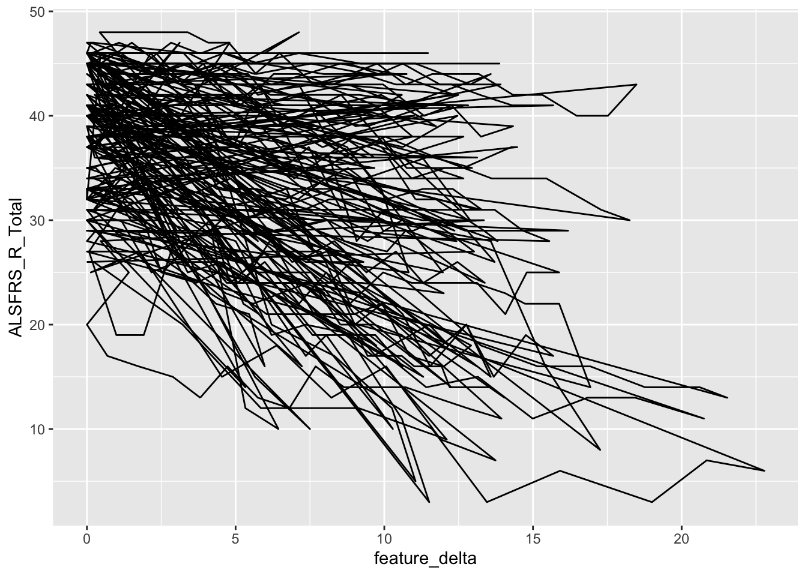

Exercise: 데이터 정제와 가공, 시각화
Yoon-Ho Hong
2022-08-16
데이터셋
PRO-ACT (Pooled Resource Open-Access ALS Clinical Trials Database)는 30여개에 달하는 ALS 치료 임상시험 데이터를 모아서 정리한 공개 데이터셋입니다.
최초 공개된 이후 두 차례에 걸쳐 crowdsourcing challenge가 있었습니다.
The
DREAM Phil Bowen ALS Prediction Prize4Life Challenge, the DREAM
Prize4Life ALS Stratification Challenge
해당 challenge 결과 입상팀의 논문은 아래에서 확인할 수 있습니다.
Crowdsourced
analysis of clinical trial data to predict amyotrophic lateral sclerosis
progression, Nat Biotech, 2015
Stratification
of amyotrophic lateral sclerosis patients: a crowdsourcing approach, Sci
Rep, 2019
작업 디렉터리 설정(Set working directory)
먼저 원하는 위치에 새로운 폴더를 생성하고, 해당 폴더를 작업 디렉터리로 설정하겠습니다. 다음, 해당 폴더 아래에 data 라는 이름의 새로운 폴더를 만듭니다.
setwd("/Users/hong/Dropbox/datamed")데이터셋 다운로드
PRO-ACT 데이터셋의 정제와 가공을 위해 PRO-ACT 웹사이트에서 제공하는 데이터셋 파일들을 다운로드합니다.
아래 URL 에서 다음 4개의 txt 파일을 다운로드합니다(data folder로).
https://github.com/yoonhohong/SnuDataMed/tree/main/data
- all_forms_PROACT_training.txt
- all_forms_PROACT_training2.txt
- all_forms_PROACT_leaderboard_full.txt
- all_forms_PROACT_validation_full
패키지 로딩
이번 실습에 필요한 다음 패키지를 로딩합니다(이전에 해당 패키지를 설치한 적이 없다면 먼저 install.packages 함수로 설치)
- tidyverse
- broom
- VennDiagram
library(tidyverse)
library(broom)
library(VennDiagram)R로 데이터셋을 불러오기(Import source datasets)
위에서 다운로드 받은 데이터셋을 R의 작업환경으로 불러옵니다.
training <- read.delim("https://www.dropbox.com/s/efmua6cro6goh6u/all_forms_PROACT_training.txt?dl=1", sep = "|", header = T)
training2<-read.delim("https://www.dropbox.com/s/ps9ouerwi3pswjx/all_forms_PROACT_training2.txt?dl=1",sep="|", header=T)
leaderboard<-read.delim("https://www.dropbox.com/s/uxeio2maq3wbjqp/all_forms_PROACT_leaderboard_full.txt?dl=1",sep="|", header=T)
validation<-read.delim("https://www.dropbox.com/s/8yonr4rgkdfh5cz/all_forms_PROACT_validation_full.txt?dl=1",sep="|", header=T)위에서 불러들인 4개의 데이터셋을 병합하여 proact라는 이름의 dataframe을 생성합니다.
proact <- rbind(training, training2, leaderboard, validation)
head(proact)## SubjectID form_name feature_name feature_value feature_unit feature_delta
## 1 329 Demographic Gender F <NA> 0
## 2 533 Demographic Gender F <NA> 0
## 3 649 Demographic Gender F <NA> 0
## 4 708 Demographic Gender M <NA> 0
## 5 902 Demographic Gender F <NA> 0
## 6 1234 Demographic Gender M <NA> 0포함된 환자 수는 몇 명인가요?
length(unique(proact$SubjectID)) # 10723 patients ## [1] 10723몇 개의 레코드(관측치)가 포함되어있나요?
dim(proact) # 4,456,146 records ## [1] 4456146 6데이터 형변환(Data type conversion)
proact에서 각 변수의 데이터 유형을 살펴보고, 적절한 데이터 유형으로 변환합니다.
feature_delta 는 임상시험 등록일을 기점으로 데이터 관측일을 가리킵니다. 일(days) 단위를 월(months)로 변환합시다.
proact <- within(proact, {
SubjectID = as.character(SubjectID)
feature_delta = round((as.numeric(feature_delta)/365)*12, 2)
form_name = factor(form_name)
})## Warning in eval(substitute(expr), e): NAs introduced by coercion데이터 정제: 중복(duplicates) 처리하기
데이터 정제(clearning)의 첫번째 과정으로 duplicate 를 제거합니다.
proact = distinct(proact)데이터 정제: 부적절한 값(irrelavant values) 제거하기
각 변수에 부적절한 값이 있는지 먼저 확인해봅니다.
summary(proact)## SubjectID form_name feature_name
## Length:4417730 Lab Test :2445126 Length:4417730
## Class :character ALSFRS :1136895 Class :character
## Mode :character Vitals : 309942 Mode :character
## FVC : 289880
## Concomitant Medication: 89228
## Adverse Event : 69372
## (Other) : 77287
## feature_value feature_unit feature_delta
## Length:4417730 Length:4417730 Min. :-15.39
## Class :character Class :character 1st Qu.: 1.38
## Mode :character Mode :character Median : 4.54
## Mean : 6.20
## 3rd Qu.: 9.50
## Max. :123.02
## NA's :173025feature_delta 의 분포를 확인해봅시다(histogram)
proact %>%
ggplot(aes(feature_delta)) +
geom_histogram()## Warning: Removed 173025 rows containing non-finite values (stat_bin).
feature_delta 가 음수인 레코드는 제거합니다.
proact = proact %>%
filter(feature_delta >= 0)데이터 정제: 일관되지 않은 값(inconsistent values) 처리하기
데이터 정제(clearning)의 두번째 과정으로 일관되지 않은 값을 찾아 제거합니다. 즉, SubjectID, form_name, feature_name, feature_unit, feature_delta 가 모두 동일한데, feature_value 가 다른 관측치가 대상입니다.
temp = proact %>%
count(SubjectID, form_name, feature_name, feature_unit,
feature_delta) %>%
filter(n == 1) %>%
select(-n)
proact = proact %>%
inner_join(temp, by = c("SubjectID","form_name","feature_name","feature_unit","feature_delta"))데이터 정제: 결측치(missing data) 처리하기
인구학적 정보(demographic information)에서 결측치를 어떻게 처리할지 생각해보기 위해 각 변수별로 결측치를 확인합니다.
demographic = proact %>%
filter(form_name == "Demographic") %>%
select(SubjectID, feature_name, feature_value)
demographic = spread(demographic, feature_name, feature_value)
demographic = within(demographic, {
Age = round(as.numeric(Age))
Gender = factor(Gender)
Race = factor(Race)
})
summary(demographic)## SubjectID Age Gender Race
## Length:8653 Min. :18.00 : 6 White :6634
## Class :character 1st Qu.:48.00 F:3331 Unknown :1779
## Mode :character Median :57.00 M:5316 Black : 112
## Mean :56.26 Asian : 62
## 3rd Qu.:65.00 Other : 41
## Max. :88.00 Hispanic: 18
## NA's :7 (Other) : 7인구학적 정보(demographic information)에서 결측치가 있는 환자를 제외하기로 합니다.
demographic = demographic[complete.cases(demographic),]완전한 인구학적 정보가 있는 환자 수는 몇 명인가요?
length(unique(demographic$SubjectID)) # 8646 patients ## [1] 8646demographic.csv 파일로 data 폴더내에 저장합니다.
write.csv(demographic, "data/demographic.csv", quote = F, row.names = F)이번에는 같은 방식으로 ALSHX form 에서 결측치를 확인합니다.
alshx = proact %>%
filter(form_name == "ALSHX") %>%
select(SubjectID, feature_name, feature_value)
alshx = spread(alshx, feature_name, feature_value)
alshx = within(alshx, {
diag_delta = as.numeric(as.character(diag_delta))
onset_delta = as.numeric(as.character(onset_delta))
onset_site = factor(onset_site)
})
summary(alshx)## SubjectID diag_delta onset_delta onset_site
## Length:9297 Min. :-7372.0 Min. :-11382.0 Bulbar :2173
## Class :character 1st Qu.: -367.0 1st Qu.: -823.0 Limb :6677
## Mode :character Median : -190.5 Median : -549.0 Limb and Bulbar: 84
## Mean : -278.2 Mean : -661.4 Other : 362
## 3rd Qu.: -89.0 3rd Qu.: -362.0 NA's : 1
## Max. : 238.0 Max. : 184.0
## NA's :4837 NA's :2408결축치를 확인하는 과정에서 부적절한 값(irrelavant values)들이 포함되어 있는 것을 확인할 수 있습니다.
diag_delta, onset_delta 가 양수인 환자들을 제외합니다.
alshx = alshx %>%
filter(diag_delta <= 0) %>%
filter(onset_delta <= 0)단위 변환: diag_delta, onset_delta 변수 값 단위를 월로 변환하고, 부호를 음에서 양으로 전환합니다.
새로운 변수(meta-feature) 만들기: onset2dx, 즉 onset 에서 dx 까지 기간을 가리키는 새로운 변수를 만듭니다.
alshx = within(alshx, {
diag_delta = -round((diag_delta/365)*12,2)
onset_delta = -round((onset_delta/365)*12,2)
onset2dx = onset_delta - diag_delta
})onset2dx 이 음의 값이 되는 환자는 제외합니다(부적절한 값)
alshx = alshx %>%
filter(onset2dx >= 0)결측치가 있는 환자를 제외합니다.
alshx = alshx[complete.cases(alshx),]완전한 ALSHX 정보를 가진 환자는 몇 명인가요?
length(unique(alshx$SubjectID)) # 4442 patients ## [1] 4442데이터 가공: Factor levels 조정
onset_site 변수 값의 범주를 확인합니다.
levels(alshx$onset_site)## [1] "Bulbar" "Limb" "Limb and Bulbar" "Other"onset_site 값의 범주를 Bulbar와 Non-bulbar 둘로 재조직합니다.
alshx$onset_site = fct_collapse(alshx$onset_site, Nonbulbar = c("Limb","Limb and Bulbar","Other")) 데이터 정제 과정에서 추출한 데이터셋들간의 집합 관계 확인하기
demographic과 alshx 데이터셋의 SubjectID 리스트 간의 집합 관계를 살펴봅시다(VennDiagram::venn.diagram).
A = unique(demographic$SubjectID)
B = unique(alshx$SubjectID)
venn.diagram(list(SetA = A, SetB = B), filename = "img/venndiagram.png", disable.logging = T)## INFO [2022-08-28 01:03:54] [[1]]
## INFO [2022-08-28 01:03:54] list(SetA = A, SetB = B)
## INFO [2022-08-28 01:03:54]
## INFO [2022-08-28 01:03:54] $filename
## INFO [2022-08-28 01:03:54] [1] "img/venndiagram.png"
## INFO [2022-08-28 01:03:54]
## INFO [2022-08-28 01:03:54] $disable.logging
## INFO [2022-08-28 01:03:54] T
## INFO [2022-08-28 01:03:54]## [1] 1ALSFRS 데이터셋 추출하기
proact에서 ALSFRS form 에 해당하는 데이터만 추출합니다.
ALSFRS는 ALS functional rating scale 입니다. 질환의 중증도에 대한 임상 척도입니다.
alsfrs <- proact %>%
filter(form_name=="ALSFRS") %>%
select(-c(form_name,feature_unit))
head(alsfrs)## SubjectID feature_name feature_value feature_delta
## 1 329 Q1_Speech 4 0.00
## 2 329 Q1_Speech 4 0.26
## 3 329 Q1_Speech 4 0.53
## 4 329 Q1_Speech 4 1.38
## 5 329 Q1_Speech 4 2.37
## 6 329 Q1_Speech 3 3.48ALSFRS 데이터셋에서 형변환
아래 변수들을 적절히 형변환합니다.
- feature_value: chr to numeric
- feature_name: chr to factor
alsfrs$feature_value <- as.numeric(alsfrs$feature_value)
alsfrs$feature_name = factor(alsfrs$feature_name)데이터프레임의 구조 변환하기: long to wide format
alsfrs 데이터셋을 long format 에서 wide format 으로 전환합니다.
alsfrs_wide <- spread(alsfrs,key = feature_name, value = feature_value)
head(alsfrs_wide)## SubjectID feature_delta ALSFRS_R_Total ALSFRS_Total hands leg mouth Q1_Speech
## 1 100256 0.00 34 26 5 2 12 4
## 2 100256 0.33 30 22 3 2 12 4
## 3 100256 3.29 32 24 3 2 12 4
## 4 100256 6.21 25 18 3 1 11 4
## 5 100256 9.21 23 17 1 0 12 4
## 6 100256 12.95 21 15 0 0 11 4
## Q10_Respiratory Q2_Salivation Q3_Swallowing Q4_Handwriting Q5_Cutting
## 1 3 4 4 3 2
## 2 4 4 4 2 1
## 3 4 4 4 2 1
## 4 3 4 3 2 1
## 5 4 4 4 1 0
## 6 4 3 4 0 0
## Q5a_Cutting_without_Gastrostomy Q5b_Cutting_with_Gastrostomy
## 1 2 NA
## 2 1 NA
## 3 1 NA
## 4 1 NA
## 5 0 NA
## 6 0 NA
## Q6_Dressing_and_Hygiene Q7_Turning_in_Bed Q8_Walking Q9_Climbing_Stairs
## 1 2 2 2 0
## 2 0 1 2 0
## 3 1 2 2 0
## 4 0 0 1 0
## 5 0 0 0 0
## 6 0 0 0 0
## R1_Dyspnea R2_Orthopnea R3_Respiratory_Insufficiency respiratory
## 1 4 3 4 3
## 2 4 4 4 4
## 3 4 4 4 4
## 4 3 4 3 3
## 5 4 3 3 4
## 6 4 3 3 4
## respiratory_R trunk
## 1 11 4
## 2 12 1
## 3 12 3
## 4 10 0
## 5 10 0
## 6 10 0alsfrs 레코드는 총 몇개가 있나요?
dim(alsfrs_wide) # 59284 records ## [1] 59284 25alsfrs 레코드가 있는 환자 수는 총 몇 명인가요?
length(unique(alsfrs_wide$SubjectID)) # 6510 patients ## [1] 6510데이터 정제: ALSFRS
alsfrs_wide 요약을 살펴봅니다. 어떤 변수들이 있는지, 각 변수 값의 요약 통계치, 결측치 규모를 확인합니다.
summary(alsfrs_wide)## SubjectID feature_delta ALSFRS_R_Total ALSFRS_Total
## Length:59284 Min. : 0.00 Min. : 0.0 Min. : 0.0
## Class :character 1st Qu.: 1.87 1st Qu.:27.0 1st Qu.:21.0
## Mode :character Median : 4.93 Median :34.0 Median :27.0
## Mean : 6.38 Mean :32.6 Mean :25.7
## 3rd Qu.: 9.67 3rd Qu.:39.0 3rd Qu.:32.0
## Max. :69.50 Max. :48.0 Max. :40.0
## NA's :29127 NA's :23
## hands leg mouth Q1_Speech
## Min. :0.000 Min. :0.000 Min. : 0.000 Min. :0.000
## 1st Qu.:3.000 1st Qu.:2.000 1st Qu.: 8.000 1st Qu.:2.000
## Median :5.000 Median :3.000 Median :10.000 Median :3.000
## Mean :4.665 Mean :3.817 Mean : 9.256 Mean :2.869
## 3rd Qu.:7.000 3rd Qu.:6.000 3rd Qu.:12.000 3rd Qu.:4.000
## Max. :8.000 Max. :8.000 Max. :12.000 Max. :4.000
## NA's :39 NA's :18 NA's :18 NA's :7
## Q10_Respiratory Q2_Salivation Q3_Swallowing Q4_Handwriting
## Min. :0.000 Min. :0.000 Min. :0.000 Min. :0.000
## 1st Qu.:3.000 1st Qu.:3.000 1st Qu.:3.000 1st Qu.:2.000
## Median :4.000 Median :4.000 Median :4.000 Median :3.000
## Mean :3.468 Mean :3.186 Mean :3.201 Mean :2.496
## 3rd Qu.:4.000 3rd Qu.:4.000 3rd Qu.:4.000 3rd Qu.:3.000
## Max. :4.000 Max. :4.000 Max. :4.000 Max. :4.000
## NA's :23069 NA's :8 NA's :10 NA's :13
## Q5_Cutting Q5a_Cutting_without_Gastrostomy Q5b_Cutting_with_Gastrostomy
## Min. :0.000 Min. :0.000 Min. :0.00
## 1st Qu.:1.000 1st Qu.:1.000 1st Qu.:0.00
## Median :2.000 Median :2.000 Median :1.00
## Mean :2.169 Mean :2.239 Mean :1.63
## 3rd Qu.:3.000 3rd Qu.:3.000 3rd Qu.:3.00
## Max. :4.000 Max. :4.000 Max. :4.00
## NA's :29 NA's :8542 NA's :49971
## Q6_Dressing_and_Hygiene Q7_Turning_in_Bed Q8_Walking Q9_Climbing_Stairs
## Min. :0.000 Min. :0.000 Min. :0.000 Min. :0.000
## 1st Qu.:1.000 1st Qu.:2.000 1st Qu.:2.000 1st Qu.:0.000
## Median :2.000 Median :3.000 Median :2.000 Median :1.000
## Mean :2.017 Mean :2.559 Mean :2.324 Mean :1.493
## 3rd Qu.:3.000 3rd Qu.:4.000 3rd Qu.:3.000 3rd Qu.:3.000
## Max. :4.000 Max. :4.000 Max. :4.000 Max. :4.000
## NA's :13 NA's :16 NA's :15 NA's :11
## R1_Dyspnea R2_Orthopnea R3_Respiratory_Insufficiency respiratory
## Min. :0.000 Min. :0.00 Min. :0.000 Min. :0.000
## 1st Qu.:3.000 1st Qu.:3.00 1st Qu.:4.000 1st Qu.:3.000
## Median :4.000 Median :4.00 Median :4.000 Median :4.000
## Mean :3.245 Mean :3.54 Mean :3.689 Mean :3.384
## 3rd Qu.:4.000 3rd Qu.:4.00 3rd Qu.:4.000 3rd Qu.:4.000
## Max. :4.000 Max. :4.00 Max. :4.000 Max. :4.000
## NA's :29112 NA's :29111 NA's :29109 NA's :15
## respiratory_R trunk
## Min. : 0.00 Min. :0.000
## 1st Qu.:10.00 1st Qu.:3.000
## Median :12.00 Median :5.000
## Mean :10.47 Mean :4.575
## 3rd Qu.:12.00 3rd Qu.:6.000
## Max. :12.00 Max. :8.000
## NA's :29117 NA's :24Q5 항목은 Gastrostomy 여부에 따라 Q5a 와 Q5b 둘 중의 한 항목만 기록합니다. 따라서, 두 항목이 모두 기록된 경우 부적절한 레코드로 간주합니다. 해당 레코드가 몇 개나 있는지 확인해봅시다.
temp2 = alsfrs_wide %>%
filter(!is.na(Q5a_Cutting_without_Gastrostomy)) %>%
filter(!is.na(Q5b_Cutting_with_Gastrostomy)) %>%
count(SubjectID, feature_delta)
head(temp2)## SubjectID feature_delta n
## 1 101314 0.00 1
## 2 101314 2.99 1
## 3 101314 5.75 1
## 4 101314 8.75 1
## 5 101314 11.74 1
## 6 101314 14.73 1dim(temp2)## [1] 797 3해당 레코드를 제거합니다(Exclude records with both Q5a and Q5b item scores recorded)
alsfrs_wide = alsfrs_wide %>%
anti_join(temp2, by = c("SubjectID", "feature_delta")) Gastrostomy 여부에 관한 변수를 생성합니다(TRUE/FALSE)
Q5b_Cutting_with_Gastrostomy 변수 값이 NA 면 TRUE, 그렇지 않으면 FALSE
alsfrs_wide = alsfrs_wide %>%
mutate(Gastrostomy = ifelse(is.na(Q5b_Cutting_with_Gastrostomy), F, T)) %>%
select(-c(Q5a_Cutting_without_Gastrostomy, Q5b_Cutting_with_Gastrostomy))ALSFRS 는 original version 과 revised version, 이렇게 두 가지가
있습니다.
ALSFRS revised version 기록만 추출하기 위해서,
먼저 ALSFRS original version 에만 있는 항목들을 제거합니다: ALSFRS_Total, Q10_Respiratory, respiratory
alsfrs_rev = alsfrs_wide %>%
select(-c(ALSFRS_Total,
Q10_Respiratory, respiratory))ALSFRS revised 에는 총 12개의 항목(item)들이 있고, 이들은 크게 신체 부위별 운동 기능(hands, leg, trunk)과 구기능(mouth), 호흡 기능(respiratory)로 구분할 수 있습니다. 이러한 meta-features 들을 재조직하도록 하겠습니다.
hands, leg, trunk 점수를 합하여, motor 라는 변수로 하고,
mouth 변수 이름은 bulbar로,
respiratory_R 변수 이름은 respiratory 로 변경합니다.
alsfrs_rev = alsfrs_rev %>%
mutate(motor = hands + leg + trunk) %>%
rename(bulbar = mouth, respiratory = respiratory_R) %>%
select(-c(hands, leg, trunk)) summary(alsfrs_rev)## SubjectID feature_delta ALSFRS_R_Total bulbar
## Length:58487 Min. : 0.000 Min. : 0.00 Min. : 0.000
## Class :character 1st Qu.: 1.840 1st Qu.:27.00 1st Qu.: 8.000
## Mode :character Median : 4.870 Median :34.00 Median :10.000
## Mean : 6.331 Mean :32.58 Mean : 9.263
## 3rd Qu.: 9.600 3rd Qu.:39.00 3rd Qu.:12.000
## Max. :69.500 Max. :48.00 Max. :12.000
## NA's :29091 NA's :13
## Q1_Speech Q2_Salivation Q3_Swallowing Q4_Handwriting Q5_Cutting
## Min. :0.000 Min. :0.000 Min. :0.000 Min. :0.000 Min. :0.00
## 1st Qu.:2.000 1st Qu.:3.000 1st Qu.:3.000 1st Qu.:2.000 1st Qu.:1.00
## Median :3.000 Median :4.000 Median :4.000 Median :3.000 Median :2.00
## Mean :2.872 Mean :3.188 Mean :3.202 Mean :2.496 Mean :2.17
## 3rd Qu.:4.000 3rd Qu.:4.000 3rd Qu.:4.000 3rd Qu.:3.000 3rd Qu.:3.00
## Max. :4.000 Max. :4.000 Max. :4.000 Max. :4.000 Max. :4.00
## NA's :4 NA's :6 NA's :7 NA's :11 NA's :29
## Q6_Dressing_and_Hygiene Q7_Turning_in_Bed Q8_Walking Q9_Climbing_Stairs
## Min. :0.000 Min. :0.000 Min. :0.000 Min. :0.000
## 1st Qu.:1.000 1st Qu.:2.000 1st Qu.:2.000 1st Qu.:0.000
## Median :2.000 Median :3.000 Median :2.000 Median :1.000
## Mean :2.016 Mean :2.558 Mean :2.323 Mean :1.494
## 3rd Qu.:3.000 3rd Qu.:4.000 3rd Qu.:3.000 3rd Qu.:3.000
## Max. :4.000 Max. :4.000 Max. :4.000 Max. :4.000
## NA's :10 NA's :15 NA's :11 NA's :10
## R1_Dyspnea R2_Orthopnea R3_Respiratory_Insufficiency respiratory
## Min. :0.000 Min. :0.000 Min. :0.000 Min. : 0.00
## 1st Qu.:3.000 1st Qu.:3.000 1st Qu.:4.000 1st Qu.:10.00
## Median :4.000 Median :4.000 Median :4.000 Median :12.00
## Mean :3.239 Mean :3.536 Mean :3.686 Mean :10.46
## 3rd Qu.:4.000 3rd Qu.:4.000 3rd Qu.:4.000 3rd Qu.:12.00
## Max. :4.000 Max. :4.000 Max. :4.000 Max. :12.00
## NA's :29080 NA's :29080 NA's :29078 NA's :29083
## Gastrostomy motor
## Mode :logical Min. : 0.00
## FALSE:49971 1st Qu.: 9.00
## TRUE :8516 Median :14.00
## Mean :13.06
## 3rd Qu.:18.00
## Max. :24.00
## NA's :59ALSFRS revised 에 고유한 항목들(R1_Dyspnea, R2_Orthopnea, R3_Respiratory_Insufficiency)과 meta-feature (respiratory)에 결측치는 ALSFRS original 만 기록된 환자들로부터 유래한 레코드들입니다. 이들을 포함하여 어떤 항목에서도 결측치가 없는 레코드들만을 추출하도록 합시다.
alsfrs_rev = alsfrs_rev[complete.cases(alsfrs_rev),] 해당 환자들의 수가 얼마인가요?
length(unique(alsfrs_rev$SubjectID)) # 3275 patients ## [1] 3275변수들의 순서를 정렬해서, data 폴더에 ALSFRS_rev.csv 파일로 저장하겠습니다.
alsfrs_rev = alsfrs_rev[c(1:3,5:16,4,19,17,18)]
write.csv(alsfrs_rev, "data/ALSFRS_rev.csv",
row.names = F, quote = F)데이터 시각화: ALSFRS_R_Total 변화 추세를 line plot 으로 확인하기
환자 별로 ALSFRS_R_Total 변화 추세를 line plot 으로 확인해봅시다.
먼저 전체 환자에서 100명을 무작위로 추출합니다.
pt_lst = unique(alsfrs_rev$SubjectID)
set.seed(9)
spl = sample(pt_lst, 100, replace = F)추출된 환자들의 line plot 을 그려봅시다.
alsfrs_rev %>%
filter(SubjectID %in% spl) %>%
group_by(SubjectID) %>%
ggplot(aes(feature_delta, ALSFRS_R_Total)) +
geom_path()
데이터 가공: ALSFRS Q3_Swallowing 점수 기반 event 정의
Q3_Swallowing 점수가 1점 이하는 독립적인 삼킴 기능이 소실된 것을 가리키며, 영양 공급을 위해서는 위루술(gastrostomy)이 필요합니다.
환자 별로 위루술이 필요한 시점을 예측하는 기계학습 모델을 만들기위해 해당 event 의 발생 여부와 시점으로 구성된 학습 데이터셋이 필요합니다. 데이터 가공을 통해 이를 만들어봅시다.
# Target event dataset
tg = alsfrs_rev %>%
select(SubjectID, feature_delta, Q3_Swallowing)환자 등록 이후 초기 3개월 데이터에 기반한 예측 모델에서 alsfrs 점수는 가장 중요한 예측 변수로 예상됩니다. 따라서, 적어도 등록 이후 3개월 이상 alsfrs 기록이 있는 환자들만을 포함하고자 합니다.
배제해야 할 환자 수는 몇 명인가요?
# Patients with fu duration <= 3 mo (group I)
lt3mo_fu = alsfrs_rev %>%
group_by(SubjectID) %>%
summarise(last_delta = max(feature_delta)) %>%
filter(last_delta <= 3)
dim(lt3mo_fu) # 322 patients (fu should be longer than 3 mo)## [1] 322 23개월 이전에 이미 해당 이벤트가 발생한 환자는 데이터셋에서 제외해야합니다. 해당 환자들은 몇 명인가요?
# Patients in whom event occurred at or before 3 mo (group II)
lt3mo_event = tg %>%
filter(Q3_Swallowing <= 1) %>%
group_by(SubjectID) %>%
summarise(feature_delta = min(feature_delta)) %>%
filter(feature_delta <= 3)
# if event occurred, it should be after 3 mo
dim(lt3mo_event) # 112 patients ## [1] 112 2위와 같이 fu duration 이 3 mo 이하이거나, event 가 3 mo 이전에 발생한 환자는 제외합니다.
# Exclude the above group I and II patients
tg2 = tg %>%
anti_join(lt3mo_fu, by = "SubjectID") %>%
anti_join(lt3mo_event, by = "SubjectID")
length(unique(tg2$SubjectID)) # 2857 patients ## [1] 2857fu 기간 중 event 발생 여부를 가리키는 새로운 변수 event 를 생성하고, event 가 발생한 경우 1, 그렇지 않은 경우(censoring) 0으로 코딩합니다.
먼저 event 가 발생한 환자들만 추출하여 event 가 발생한 시기로 이루어진 데이터셋을 만듭니다.
# event occurred
tg_event = tg2 %>%
filter(Q3_Swallowing <= 1) %>%
group_by(SubjectID) %>%
summarise(feature_delta = min(feature_delta)) %>%
mutate(event = 1) feature_delta 는 3 mo 을 baseline 으로 조정합니다(shift baseline to 3 mo)
tg_event = tg_event %>%
mutate(feature_delta = feature_delta - 3)
dim(tg_event) # 605 patients ## [1] 605 3다음, event 가 발생하지 않은 환자 데이터셋을 생성합니다.
# censored
tg_censored = tg2 %>%
anti_join(tg_event, by = "SubjectID") %>%
group_by(SubjectID) %>%
summarise(feature_delta = max(feature_delta)) %>%
mutate(feature_delta = feature_delta - 3) %>%
mutate(event = 0)
dim(tg_censored) # 2252 patients ## [1] 2252 3최종 event 데이터셋을 생성하고, csv 파일로 저장합니다(파일 이름, LOA_swallowing.csv)
tg_fin = rbind(tg_event, tg_censored)
write.csv(tg_fin, "data/LOA_swallowing.csv", quote = F, row.names = F)데이터 가공: alsfrs_rev 데이터셋에서 각 항목의 초기 3개월 평균치를 계산하고, 변화 기울기(slope)를 신형 회귀 모델로 추정
초기 3개월 간 alsfrs_rev 각 항목의 평균치를 구합니다.
# Calculate meta-features (means) of alsfrs_rev over the first 3 months
alsfrs_rev_mean_3mo = alsfrs_rev %>%
filter(feature_delta <= 3) %>%
group_by(SubjectID) %>%
summarise(Gastrostomy = ifelse(any(Gastrostomy == T), T, F), # Gastrostomy == T if patients underwent gastrostomy during the first 3 mo
ALSFRS_Total = mean(ALSFRS_R_Total),
Q1_Speech = mean(Q1_Speech),
Q2_Salivation = mean(Q2_Salivation),
Q3_Swallowing = mean(Q3_Swallowing),
Q4_Handwriting = mean(Q4_Handwriting),
Q5_Cutting = mean(Q5_Cutting),
Q6_Dressing_and_Hygiene = mean(Q6_Dressing_and_Hygiene),
Q7_Turning_in_Bed = mean(Q7_Turning_in_Bed),
Q8_Walking = mean(Q8_Walking),
Q9_Climbing_Stairs = mean(Q9_Climbing_Stairs),
R1_Dyspnea = mean(R1_Dyspnea),
R2_Orthopnea = mean(R2_Orthopnea),
R3_Respiratory_Insufficiency = mean(R3_Respiratory_Insufficiency))slope 추정치 신뢰도를 높이기 위해 초기 3 개월에서 최초-최후 측정 구간이 최소 1.5 개월 이상인 환자들만을 대상으로 합니다.
# Estimate meta-features (slopes) of alsfrs_rev over the first 3 months, using linear regression
alsfrs_rev_slope_3mo = alsfrs_rev %>%
filter(feature_delta <= 3) %>%
group_by(SubjectID) %>%
mutate(interval = max(feature_delta) - min(feature_delta)) %>%
filter(interval >= 1.5)환자별 slope 를 추정하기 위해서는 반복문을 사용해서 각 환자별로 선형 회귀 모델을 적용해야 합니다. 이와 같이 반복문이 필요할 때 purrr 패키지를 사용하면 편리합니다(purrr 패키지는 tidyverse 패키지에 포함되어 있습니다)
purrr 패키지의 nest 함수를 이용해 list column 을 생성합니다. 새로 생성된 list column 의 이름은 data 입니다.
df_data = alsfrs_rev_slope_3mo %>%
group_by(SubjectID) %>%
nest()
df_data## # A tibble: 2,386 × 2
## # Groups: SubjectID [2,386]
## SubjectID data
## <chr> <list>
## 1 10059 <tibble [4 × 19]>
## 2 100933 <tibble [2 × 19]>
## 3 100981 <tibble [4 × 19]>
## 4 101645 <tibble [3 × 19]>
## 5 102107 <tibble [5 × 19]>
## 6 10244 <tibble [3 × 19]>
## 7 102814 <tibble [2 × 19]>
## 8 103126 <tibble [2 × 19]>
## 9 103350 <tibble [3 × 19]>
## 10 103471 <tibble [4 × 19]>
## # … with 2,376 more rows
## # ℹ Use `print(n = ...)` to see more rowspurrr 패키지의 map 함수를 이용하여 data 리스트에 lm 함수를 적용하여 model 을 생성합니다. map 함수는 list 타입의 데이터를 반환합니다.
df_model = df_data %>%
mutate(model = map(data, ~lm(ALSFRS_R_Total ~ feature_delta,
data = .x)))
df_model## # A tibble: 2,386 × 3
## # Groups: SubjectID [2,386]
## SubjectID data model
## <chr> <list> <list>
## 1 10059 <tibble [4 × 19]> <lm>
## 2 100933 <tibble [2 × 19]> <lm>
## 3 100981 <tibble [4 × 19]> <lm>
## 4 101645 <tibble [3 × 19]> <lm>
## 5 102107 <tibble [5 × 19]> <lm>
## 6 10244 <tibble [3 × 19]> <lm>
## 7 102814 <tibble [2 × 19]> <lm>
## 8 103126 <tibble [2 × 19]> <lm>
## 9 103350 <tibble [3 × 19]> <lm>
## 10 103471 <tibble [4 × 19]> <lm>
## # … with 2,376 more rows
## # ℹ Use `print(n = ...)` to see more rowspurrr 패키지의 map 함수를 이용해 model 에 tidy 함수(broom 패키지)를 적용하여 model 의 결과를 새로운 변수에 담습니다.
df_stat = df_model %>%
mutate(stat = map(model, ~tidy(.x)))
df_stat## # A tibble: 2,386 × 4
## # Groups: SubjectID [2,386]
## SubjectID data model stat
## <chr> <list> <list> <list>
## 1 10059 <tibble [4 × 19]> <lm> <tibble [2 × 5]>
## 2 100933 <tibble [2 × 19]> <lm> <tibble [2 × 5]>
## 3 100981 <tibble [4 × 19]> <lm> <tibble [2 × 5]>
## 4 101645 <tibble [3 × 19]> <lm> <tibble [2 × 5]>
## 5 102107 <tibble [5 × 19]> <lm> <tibble [2 × 5]>
## 6 10244 <tibble [3 × 19]> <lm> <tibble [2 × 5]>
## 7 102814 <tibble [2 × 19]> <lm> <tibble [2 × 5]>
## 8 103126 <tibble [2 × 19]> <lm> <tibble [2 × 5]>
## 9 103350 <tibble [3 × 19]> <lm> <tibble [2 × 5]>
## 10 103471 <tibble [4 × 19]> <lm> <tibble [2 × 5]>
## # … with 2,376 more rows
## # ℹ Use `print(n = ...)` to see more rowspurrr 패키지의 map 함수를 이용해 stat 변수에 unnest 함수를 적용하여 모델의 추정치 를 추출합니다.
df_est = df_stat %>%
unnest(stat)
df_est## # A tibble: 4,772 × 8
## # Groups: SubjectID [2,386]
## SubjectID data model term estim…¹ std.e…² stati…³ p.value
## <chr> <list> <list> <chr> <dbl> <dbl> <dbl> <dbl>
## 1 10059 <tibble [4 × 19]> <lm> (Interc… 40.9 0.696 58.7 2.90e-4
## 2 10059 <tibble [4 × 19]> <lm> feature… -2.20 0.404 -5.44 3.21e-2
## 3 100933 <tibble [2 × 19]> <lm> (Interc… 32 NaN NaN NaN
## 4 100933 <tibble [2 × 19]> <lm> feature… 2.30 NaN NaN NaN
## 5 100981 <tibble [4 × 19]> <lm> (Interc… 45 0 Inf 0
## 6 100981 <tibble [4 × 19]> <lm> feature… 0 0 NaN NaN
## 7 101645 <tibble [3 × 19]> <lm> (Interc… 39.7 1.37 29.0 2.19e-2
## 8 101645 <tibble [3 × 19]> <lm> feature… -1.62 0.791 -2.05 2.89e-1
## 9 102107 <tibble [5 × 19]> <lm> (Interc… 38.3 0.761 50.4 1.72e-5
## 10 102107 <tibble [5 × 19]> <lm> feature… -2.57 0.394 -6.52 7.32e-3
## # … with 4,762 more rows, and abbreviated variable names ¹estimate, ²std.error,
## # ³statistic
## # ℹ Use `print(n = ...)` to see more rows마지막으로 slope 추정치를 추출하여 alsfrs_rev_slope 데이터셋을 생성합니다.
alsfrs_rev_slope_3mo_total = df_est %>%
filter(term == "feature_delta") %>%
select(SubjectID, estimate) %>%
rename(slope_total = estimate)
alsfrs_rev_slope_3mo_total## # A tibble: 2,386 × 2
## # Groups: SubjectID [2,386]
## SubjectID slope_total
## <chr> <dbl>
## 1 10059 -2.20
## 2 100933 2.30
## 3 100981 0
## 4 101645 -1.62
## 5 102107 -2.57
## 6 10244 -1.96
## 7 102814 -1.86
## 8 103126 -1.45
## 9 103350 0.446
## 10 103471 -1.14
## # … with 2,376 more rows
## # ℹ Use `print(n = ...)` to see more rows위와 같은 과정으로 이번에는 bulbar slope 를 추정합니다.
alsfrs_rev_slope_3mo_bulbar = alsfrs_rev_slope_3mo %>%
group_by(SubjectID) %>%
nest() %>%
mutate(model = map(data, ~lm(bulbar ~ feature_delta,
data = .x))) %>%
mutate(stat = map(model, ~tidy(.x))) %>%
unnest(stat) %>%
filter(term == "feature_delta") %>%
select(SubjectID, estimate) %>%
rename(slope_bulbar = estimate)
alsfrs_rev_slope_3mo_bulbar## # A tibble: 2,386 × 2
## # Groups: SubjectID [2,386]
## SubjectID slope_bulbar
## <chr> <dbl>
## 1 10059 0
## 2 100933 5.75e- 1
## 3 100981 0
## 4 101645 -1.94e- 1
## 5 102107 8.73e-16
## 6 10244 -1.43e-15
## 7 102814 -6.21e- 1
## 8 103126 1.21e-15
## 9 103350 3.77e- 1
## 10 103471 0
## # … with 2,376 more rows
## # ℹ Use `print(n = ...)` to see more rows위와 같은 과정으로 이번에는 motor slope 를 추정합니다.
# Estimate slope_motor
alsfrs_rev_slope_3mo_motor = alsfrs_rev_slope_3mo %>%
group_by(SubjectID) %>%
nest() %>%
mutate(model = map(data, ~lm(motor ~ feature_delta,
data = .x))) %>%
mutate(stat = map(model, ~tidy(.x))) %>%
unnest(stat) %>%
filter(term == "feature_delta") %>%
select(SubjectID, estimate) %>%
rename(slope_motor = estimate)
alsfrs_rev_slope_3mo_motor## # A tibble: 2,386 × 2
## # Groups: SubjectID [2,386]
## SubjectID slope_motor
## <chr> <dbl>
## 1 10059 -2.20
## 2 100933 0.575
## 3 100981 0
## 4 101645 -0.540
## 5 102107 -2.57
## 6 10244 -1.96
## 7 102814 -0.621
## 8 103126 -1.45
## 9 103350 -0.617
## 10 103471 -1.14
## # … with 2,376 more rows
## # ℹ Use `print(n = ...)` to see more rows위와 같은 과정으로 이번에는 respiratory slope 를 추정합니다.
# Estimate slope_respiratory
alsfrs_rev_slope_3mo_resp = alsfrs_rev_slope_3mo %>%
group_by(SubjectID) %>%
nest() %>%
mutate(model = map(data, ~lm(respiratory ~ feature_delta,
data = .x))) %>%
mutate(stat = map(model, ~tidy(.x))) %>%
unnest(stat) %>%
filter(term == "feature_delta") %>%
select(SubjectID, estimate) %>%
rename(slope_resp = estimate)
alsfrs_rev_slope_3mo_resp## # A tibble: 2,386 × 2
## # Groups: SubjectID [2,386]
## SubjectID slope_resp
## <chr> <dbl>
## 1 10059 0
## 2 100933 1.15e+ 0
## 3 100981 0
## 4 101645 -8.86e- 1
## 5 102107 0
## 6 10244 -1.43e-15
## 7 102814 -6.21e- 1
## 8 103126 1.21e-15
## 9 103350 6.86e- 1
## 10 103471 0
## # … with 2,376 more rows
## # ℹ Use `print(n = ...)` to see more rows위에서 계산한 평균치와 추정한 slope 데이터를 모아 초기 3개월 meta-features 데이터셋을 완성합니다.
alsfrs_rev_3mo = alsfrs_rev_mean_3mo %>%
left_join(alsfrs_rev_slope_3mo_total, by = "SubjectID") %>%
left_join(alsfrs_rev_slope_3mo_bulbar, by = "SubjectID") %>%
left_join(alsfrs_rev_slope_3mo_motor, by = "SubjectID") %>%
left_join(alsfrs_rev_slope_3mo_resp, by = "SubjectID")
alsfrs_rev_3mo## # A tibble: 3,273 × 19
## SubjectID Gastrostomy ALSFR…¹ Q1_Sp…² Q2_Sa…³ Q3_Sw…⁴ Q4_Ha…⁵ Q5_Cu…⁶ Q6_Dr…⁷
## <chr> <lgl> <dbl> <dbl> <dbl> <dbl> <dbl> <dbl> <dbl>
## 1 100256 FALSE 32 4 4 4 2.5 1.5 1
## 2 100272 TRUE 38 3.5 4 3 3.5 3.5 1.5
## 3 10059 FALSE 37.8 4 4 4 3 3.75 2
## 4 100603 FALSE 33.5 3.5 2.5 4 1.5 1.5 1
## 5 100933 FALSE 34 1.5 3 1 2 3 2.5
## 6 100981 FALSE 45 4 4 4 3 3 3
## 7 101247 TRUE 33 3 4 3 2 2 3
## 8 101315 TRUE 37 3 4 3 4 4 2
## 9 10136 TRUE 42 2 4 4 3 4 4
## 10 101645 FALSE 38 3.33 4 4 3.67 3.33 3
## # … with 3,263 more rows, 10 more variables: Q7_Turning_in_Bed <dbl>,
## # Q8_Walking <dbl>, Q9_Climbing_Stairs <dbl>, R1_Dyspnea <dbl>,
## # R2_Orthopnea <dbl>, R3_Respiratory_Insufficiency <dbl>, slope_total <dbl>,
## # slope_bulbar <dbl>, slope_motor <dbl>, slope_resp <dbl>, and abbreviated
## # variable names ¹ALSFRS_Total, ²Q1_Speech, ³Q2_Salivation, ⁴Q3_Swallowing,
## # ⁵Q4_Handwriting, ⁶Q5_Cutting, ⁷Q6_Dressing_and_Hygiene
## # ℹ Use `print(n = ...)` to see more rows, and `colnames()` to see all variable names데이터 가공: ALSFRS, 3-12 mo, ALSFRS_rev total score slope 추청하기
slope 추정치 신뢰도를 높이기 위해 3-12개월 최초-최후 측정 구간이 최소 6개월 이상인 환자들만을 대상으로 합니다.
# Estimate meta-features (slopes) of alsfrs_rev over 3 to 12 months, using linear regression
alsfrs_rev_slope_3to12mo = alsfrs_rev %>%
filter(feature_delta >= 3) %>%
filter(feature_delta <= 12) %>%
group_by(SubjectID) %>%
mutate(interval = last(feature_delta) - first(feature_delta)) %>%
filter(interval >= 6)초기 3개월 데이터에서 linear regression 모델을 이용하여 slope 를 구한 것과 같은 방식으로 total score 의 slope 를 추정합니다.
# Estimate slope_total
alsfrs_rev_slope_3to12mo_total = alsfrs_rev_slope_3to12mo %>%
group_by(SubjectID) %>%
nest() %>%
mutate(model = map(data, ~lm(ALSFRS_R_Total ~ feature_delta,
data = .x))) %>%
mutate(stat = map(model, ~tidy(.x))) %>%
unnest(stat) %>%
filter(term == "feature_delta") %>%
select(SubjectID, estimate) %>%
rename(slope_total = estimate)
alsfrs_rev_slope_3to12mo_total ## # A tibble: 1,734 × 2
## # Groups: SubjectID [1,734]
## SubjectID slope_total
## <chr> <dbl>
## 1 100603 -2.57
## 2 100933 -1.18
## 3 100981 0
## 4 10244 0.360
## 5 102814 -0.775
## 6 103410 -1.12
## 7 103471 -1.11
## 8 103569 -1.58
## 9 104179 -0.617
## 10 104653 -1.91
## # … with 1,724 more rows
## # ℹ Use `print(n = ...)` to see more rowsdata 폴더에 ALSFRS_rev_slope_3to12mo.csv 파일로 저장합니다.
write.csv(alsfrs_rev_slope_3to12mo_total, "data/ALSFRS_rev_slope_3to12mo.csv", row.names = F, quote = F)데이터 정제 및 가공: FVC
proact 데이터셋에서 form_name 이 FVC 이고, feature_name 이 fvc_percent 인 데이터만 추출합니다.
fvc = proact %>%
filter(form_name == "FVC") %>%
filter(feature_name == "fvc_percent") %>%
select(SubjectID, feature_name, feature_value, feature_delta)
head(fvc)## SubjectID feature_name feature_value feature_delta
## 1 89 fvc_percent 75.4569190600522 0.00
## 2 329 fvc_percent 98.2531428217797 0.00
## 3 329 fvc_percent 103.255587430199 0.53
## 4 329 fvc_percent 101.331570273115 1.38
## 5 329 fvc_percent 102.870783998782 2.37
## 6 329 fvc_percent 92.9941625924156 4.44feature_value 변수를 형변환하고(chr to numeric), 정수로 반올림하고, 이름을 FVC 로 변경하고, 결측치는 제외합니다.
fvc = fvc %>%
mutate(feature_value = round(as.numeric(feature_value))) %>%
rename(FVC = feature_value) %>%
select(-feature_name)
fvc = fvc[complete.cases(fvc),]
summary(fvc)## SubjectID FVC feature_delta
## Length:44513 Min. : 0.00 Min. : 0.000
## Class :character 1st Qu.: 59.00 1st Qu.: 1.020
## Mode :character Median : 76.00 Median : 3.910
## Mean : 74.22 Mean : 5.373
## 3rd Qu.: 91.00 3rd Qu.: 8.280
## Max. :302.00 Max. :69.700fvc 초기 3개월 평균치와 slope 를 ALSFRS_rev 에 대해서 했던 것과 같은 방식으로 계산하고 추정합니다.
# Calculate fvc_mean for the first 3 mo
fvc_3mo_mean = fvc %>%
filter(feature_delta <= 3) %>%
group_by(SubjectID) %>%
summarise(FVC = mean(FVC))
fvc_3mo_mean## # A tibble: 7,217 × 2
## SubjectID FVC
## <chr> <dbl>
## 1 100256 78
## 2 100272 120.
## 3 10059 82.6
## 4 100626 88
## 5 100791 76
## 6 100806 77.2
## 7 100933 61.5
## 8 100962 64
## 9 101154 80.3
## 10 101247 81
## # … with 7,207 more rows
## # ℹ Use `print(n = ...)` to see more rowsslope 추정치의 신뢰도를 위해 초기 3개월 내에 적어도 1.5 개월 이상의 간격 측정치가 있는 환자로 한정합니다.
# Estimate fvc_3mo_slope with linear regression (3 mo)
fvc_3mo = fvc %>%
filter(feature_delta <= 3) %>%
group_by(SubjectID) %>%
mutate(interval = max(feature_delta) - min(feature_delta)) %>%
filter(interval >= 1.5) %>%
select(-interval)linear regression 을 적용하여 slope 를 추정합니다.
fvc_3mo_slope = fvc_3mo %>%
group_by(SubjectID) %>%
nest() %>%
mutate(model = map(data, ~lm(FVC ~ feature_delta,
data = .x))) %>%
mutate(stat = map(model, ~tidy(.x))) %>%
unnest(stat) %>%
filter(term == "feature_delta") %>%
select(SubjectID, estimate) %>%
rename(FVC_3mo_slope = estimate)
fvc_3mo_slope## # A tibble: 4,362 × 2
## # Groups: SubjectID [4,362]
## SubjectID FVC_3mo_slope
## <chr> <dbl>
## 1 329 1.47
## 2 649 -2.51
## 3 708 -1.88
## 4 902 -1.27
## 5 1234 0.277
## 6 2540 -16.4
## 7 2956 2.14
## 8 3085 0.125
## 9 3551 0.474
## 10 3809 -6.58
## # … with 4,352 more rows
## # ℹ Use `print(n = ...)` to see more rowsFVC 3mo 평균치와 slope 데이터셋을 병합하기(Merge fvc_3mo_mean and fvc_3mo_slope)
fvc_3mo = fvc_3mo_mean %>%
left_join(fvc_3mo_slope, by = "SubjectID")
fvc_3mo## # A tibble: 7,217 × 3
## SubjectID FVC FVC_3mo_slope
## <chr> <dbl> <dbl>
## 1 100256 78 NA
## 2 100272 120. NA
## 3 10059 82.6 -4.65
## 4 100626 88 0.219
## 5 100791 76 NA
## 6 100806 77.2 -4.98
## 7 100933 61.5 -0.575
## 8 100962 64 -1.75
## 9 101154 80.3 -1.51
## 10 101247 81 NA
## # … with 7,207 more rows
## # ℹ Use `print(n = ...)` to see more rows데이터 가공: Riluzole
form_name 이 FamilyHx 인 레코드를 추출하고, feature_name 과 feature_value 의 형변환(chr to factor)
rlz = proact %>%
filter(form_name == "Riluzole") %>%
select(-c(form_name, feature_unit, feature_delta)) %>%
mutate(feature_name = factor(feature_name),
feature_value = factor(feature_value))
summary(rlz)## SubjectID feature_name feature_value
## Length:8799 if_use_Riluzole:8799 No :1987
## Class :character Yes:6812
## Mode :character데이터 가공: Vitals
form_name 이 Vitals 인 데이터셋을 추출하고, feature_name 을 형변환합니다(chr to factor)
vitals = proact %>%
filter(form_name == "Vitals") %>%
mutate(feature_name = factor(feature_name),
feature_value = as.numeric(feature_value)) %>%
select(-c(form_name, feature_unit))
summary(vitals)## SubjectID feature_name feature_value feature_delta
## Length:308505 bp_systolic :53527 Min. : 0.00 Min. : 0.000
## Class :character bp_diastolic :53514 1st Qu.: 36.70 1st Qu.: 0.950
## Mode :character pulse :53410 Median : 74.20 Median : 3.910
## respiratory_rate:52565 Mean : 72.86 Mean : 5.917
## weight :50266 3rd Qu.: 93.60 3rd Qu.: 9.210
## temperature :31081 Max. :262.00 Max. :69.500
## (Other) :14142feature_name 변수 값을 확인합니다.
levels(vitals$feature_name)## [1] "BMI" "bp_diastolic" "bp_systolic" "height"
## [5] "pulse" "respiratory_rate" "temperature" "weight"초기 3개월 BMI 평균치를 구합니다.
# Calculate mean BMI for the first 3 mo
bmi_3mo = vitals %>%
filter(feature_name == "BMI") %>%
filter(feature_delta <= 3)
bmi_3mo_wide = spread(bmi_3mo, key = feature_name, value = feature_value)
bmi_3mo_mean = bmi_3mo_wide %>%
group_by(SubjectID) %>%
summarise(BMI = mean(BMI)*10000)
bmi_3mo_mean## # A tibble: 4,549 × 2
## SubjectID BMI
## <chr> <dbl>
## 1 10027 23.7
## 2 100272 24.1
## 3 100603 21.8
## 4 100626 34.5
## 5 100806 26.7
## 6 100933 25.3
## 7 100962 24.1
## 8 100981 24.2
## 9 10118 18.6
## 10 101247 23.6
## # … with 4,539 more rows
## # ℹ Use `print(n = ...)` to see more rows초기 3개월 bp_diastolic, bp_systolic, pulse, respiratory_rate, temperature 평균치를 구합니다.
vitalsign_3mo = vitals %>%
filter(feature_name %in%
c("bp_systolic", "bp_diastolic", "pulse",
"respiratory_rate", "temperature")) %>%
filter(feature_delta <= 3)
vitalsign_3mo_wide = spread(vitalsign_3mo, key = feature_name, value = feature_value)
vitalsign_3mo_wide = vitalsign_3mo_wide %>%
rename(dbp = bp_diastolic,
sbp = bp_systolic,
hr = pulse,
rr = respiratory_rate,
temp = temperature)
# Calculate mean vital sign over the first 3 mo
vitalsign_3mo_mean = vitalsign_3mo_wide %>%
group_by(SubjectID) %>%
summarise(dbp = mean(dbp),
sbp = mean(sbp),
hr = mean(hr),
rr = mean(rr),
temp = mean(temp))
vitalsign_3mo_mean## # A tibble: 7,024 × 6
## SubjectID dbp sbp hr rr temp
## <chr> <dbl> <dbl> <dbl> <dbl> <dbl>
## 1 100256 82 116 79.2 12.4 36.4
## 2 10027 70 120 80 NA NA
## 3 100272 80.3 128. 87.7 20.7 36.5
## 4 100603 82 130. 78.7 20 36.6
## 5 100626 108. 170 80 12.5 NA
## 6 100806 100 162. 63.2 15 NA
## 7 100933 83.4 121. 85.4 19.4 36.7
## 8 100962 76.7 132. 83.3 22 NA
## 9 100981 80.3 113 66.7 NA NA
## 10 101154 73.5 118. 64.5 14 NA
## # … with 7,014 more rows
## # ℹ Use `print(n = ...)` to see more rows데이터 가공: Lab Test
form_name 이 Lab Test 인 데이터셋을 추출합니다.
lab = proact %>%
filter(form_name == "Lab Test") %>%
select(-c(form_name, feature_unit)) %>%
mutate(feature_name = factor(feature_name),
feature_value = as.numeric(feature_value))## Warning in mask$eval_all_mutate(quo): NAs introduced by coercionfeature_name 에 어떤 값들이 포함되어 있는지 살펴봅니다.
head(levels(lab$feature_name))## [1] "Absolute Atypical Lymphocyte Count" "Absolute Band Neutrophil Count"
## [3] "Absolute Basophil Count" "Absolute Eosinophil Count"
## [5] "Absolute Lymphocyte count" "Absolute Lymphocyte Count"다음 lab test features 들을 추출합니다.
- Absolute Neutrophil Count
- Absolute Lymphocyte Count
- C-Reactive Protein
- CK
- Creatinine
- GFR
- Total Cholesterol
- Triglycerides
- HDL
- LDL
- Uric Acid
- Urine Creatinine
- Urine Creatinine Clearance
lab_subset = lab %>%
filter(feature_name %in%
c("Absolute Neutrophil Count",
"Absolute Lymphocyte Count",
"C-Reactive Protein",
"CK",
"Creatinine",
"GFR",
"Total Cholesterol",
"Triglycerides",
"HDL",
"LDL",
"Uric Acid",
"Urine Creatinine",
"Urine Creatinine Clearance"
))초기 3개월 평균치를 구합니다.
wide format 으로 변환 후에 평균치를 구할 수도 있으나, 여기서는 purrr
패키지의 nest 와 map 함수를 사용해봅시다.
# Calculate mean
lab_data = lab_subset %>%
filter(feature_delta <= 3) %>%
group_by(SubjectID, feature_name) %>%
nest()
lab_data## # A tibble: 34,064 × 3
## # Groups: SubjectID, feature_name [34,064]
## SubjectID feature_name data
## <chr> <fct> <list>
## 1 329 CK <tibble [3 × 2]>
## 2 329 Uric Acid <tibble [3 × 2]>
## 3 329 C-Reactive Protein <tibble [2 × 2]>
## 4 329 Creatinine <tibble [3 × 2]>
## 5 917600 CK <tibble [1 × 2]>
## 6 917600 Creatinine <tibble [1 × 2]>
## 7 604171 C-Reactive Protein <tibble [2 × 2]>
## 8 604171 CK <tibble [3 × 2]>
## 9 604171 Creatinine <tibble [3 × 2]>
## 10 604171 Uric Acid <tibble [3 × 2]>
## # … with 34,054 more rows
## # ℹ Use `print(n = ...)` to see more rowslab_3mo_mean = lab_data %>%
mutate(mean = map_dbl(data, ~mean(.x$feature_value))) %>%
select(-data)
lab_3mo_mean## # A tibble: 34,064 × 3
## # Groups: SubjectID, feature_name [34,064]
## SubjectID feature_name mean
## <chr> <fct> <dbl>
## 1 329 CK 179.
## 2 329 Uric Acid 218.
## 3 329 C-Reactive Protein 1
## 4 329 Creatinine 58.9
## 5 917600 CK 65
## 6 917600 Creatinine 44.2
## 7 604171 C-Reactive Protein 1
## 8 604171 CK 378.
## 9 604171 Creatinine 88.4
## 10 604171 Uric Acid 337.
## # … with 34,054 more rows
## # ℹ Use `print(n = ...)` to see more rows데이터 가공: 데이터셋의 병합
이제 마지막으로 지금까지 정리한 다음 데이터셋들을 병합하도록 합니다.
- demographic (complete cases)
- alxhx (complete cases)
- alsfrs_rev_3mo (complete cases; mean, slope)
- fvc_3mo (mean, slope)
- rlz
- bmi_3mo_mean
- vitalsign_3mo_mean
- lab_3mo_mean
df = demographic %>%
inner_join(alshx, by = "SubjectID") %>%
inner_join(alsfrs_rev_3mo, by = "SubjectID") %>%
left_join(fvc_3mo, by = "SubjectID") %>%
left_join(rlz, by = "SubjectID") %>%
left_join(bmi_3mo_mean, by = "SubjectID") %>%
left_join(vitalsign_3mo_mean, by = "SubjectID") %>%
left_join(lab_3mo_mean, by = "SubjectID")병합한 데이터셋을 data 폴더에 저장합니다.
write.csv(df, "data/PROACT_preprocessed.csv", quote = F, row.names = F)- The End -